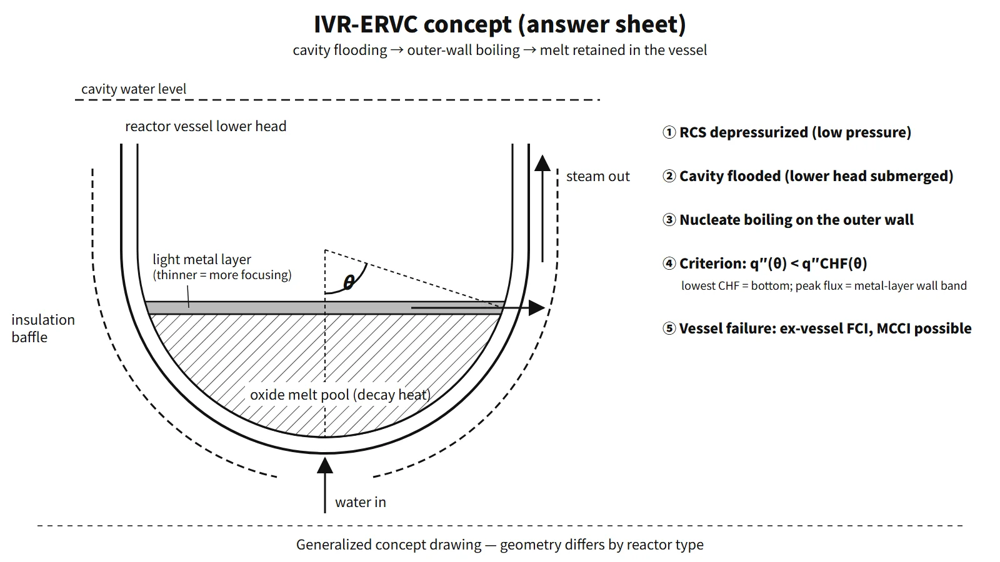

Accidents, Safety Analysis & Severe Accidents · C-SA-024
In-Vessel Retention (IVR) — Conditions and Limits for Protecting the Lower Head by External Cooling
Flood the cavity, boil on the outer wall and keep the local heat flux below the downward-facing CHF at every angle, especially where a thin metal layer focuses the heat.
In-vessel retention (IVR) is a severe accident mitigation strategy in which, even after the core has melted and collected in the reactor vessel lower head, the reactor cavity is flooded to cool the outer vessel wall (ERVC, external reactor vessel cooling), preventing vessel failure and keeping the melt inside the vessel.
Principle and mechanism
Why keep the melt inside the vessel?
Once the vessel is breached, a sequence of problems arises in containment: ex-vessel steam explosion (fuel–coolant interaction, FCI), molten core–concrete interaction (MCCI), and high-pressure melt ejection with direct containment heating (HPME/DCH). These phenomena carry large uncertainties. IVR removes the room for them to occur by preventing vessel failure in the first place. That is the difference from a core catcher, which receives and cools the melt outside the vessel. Section 19.39 of the AP1000 DCD describes IVR with the same intent.
Structure of the lower-head melt pool — stratification
The melt that collects in the lower plenum separates into layers by density.
| Layer | Composition | Heat source | Heat flux to the wall |
|---|---|---|---|
| Light metal layer (top, less dense than the oxide) | Molten stainless steel and other iron alloys + unoxidized Zr | Almost no decay heat | Receives the heat from the top of the oxide pool and passes it to a narrow band of side wall → local maximum |
| Oxide melt pool (bottom) | UO₂, ZrO₂ | Most of the decay heat | Natural convection: small at the bottom, increasing upward |
| Crust | Solidified oxide | — | Thin film between the wall and the melt pool |
The focusing effect is the key. Heat rising through the top of the oxide pool enters the metal layer, but the top of the metal layer loses heat only by radiation. The heat therefore concentrates into the narrow band of side wall that the metal layer touches. The thinner the metal layer, the smaller the wall area receiving the heat and the higher the side-wall heat flux.
If there is a lot of unoxidized Zr, part of the uranium can move into a metallic phase, and a heavy metal layer can sink below the oxide pool, forming a three-layer structure (inverted stratification; OECD MASCA). The light metal layer on top then becomes even thinner and the focusing effect worse. The AP1000 DCD judged the likelihood of this bottom metal layer forming to be small.
External cooling and the downward-facing critical heat flux
When the cavity is flooded, nucleate boiling occurs on the outer surface of the lower head. The gap between the vessel and its insulation works like a chimney and creates two-phase natural circulation: water enters at the bottom and steam leaves at the top. The maximum heat flux the outer wall can reject is the downward-facing CHF. At the bottom apex (θ = 0°) bubbles escape with difficulty and CHF is lowest; it increases toward the equator (θ = 90°).
The correlation from the ULPU-III experiment with a flat baffle is a function of angle only:
q″CHF(θ) = 490 + 30.2θ − 0.888θ² + 1.35×10⁻²θ³ − 6.65×10⁻⁵θ⁴ [kW/m², θ in degrees]
It gives 0.49 MW/m² at θ = 0°, 0.91 at 30°, 1.16 at 60° and 1.49 at 90°. AP1000 raised CHF by fitting a hemispherical baffle around the lower head and ensuring a sufficient water level. Tests (ULPU-2000 Configuration IV, later ULPU-2400) reported about 2 MW/m² near the equator.
Success criterion — heat flux versus CHF
The thermal criterion is q″(θ)/q″CHF(θ) < 1 for the outer-wall heat flux at every angle. At steady state the outer-wall heat flux equals the heat flux the melt pool delivers to the inner wall, but in a transient they can differ because of heat storage in the wall. Depressurization, the structural integrity of the remaining wall and sustained cooling are separate conditions. If the heat flux exceeds CHF, film boiling makes the wall temperature soar, the wall loses strength and fails. The AP1000 DCD concluded that, with the RCS depressurized, this thermal failure rather than structural failure is the limit. The margin is governed not by the average heat flux but by the local peak heat flux at the height of the metal layer.
![Left: cutaway of a reactor vessel lower head submerged in a flooded cavity, with the oxide melt pool, a thin upper metal layer, crust, insulation baffle, water inflow at the bottom and steam outlet at the top, and the angle θ measured from the hemisphere centre. Right: graph of outer-wall heat flux from 0 to 2.0 MW/m² against θ from 0 to 90°, with the ULPU-III CHF curve rising from 0.49 to 1.49 MW/m², a thin-metal-layer example spiking to 1.45 MW/m² near 72° where CHF is about 1.31, and a thick-layer example staying below CHF](../../assets/images/concepts/c-sa-024-in-vessel-retention/fig1-ivr-heat-flux-vs-chf.webp)
Representative values show large margins for low-power designs. Loviisa was assessed at a metal-layer peak heat flux of about 680 kW/m² against a ULPU CHF of 1,200 kW/m² or more. For AP600 the heat-load ratio was mostly below 0.6. For AP1000 the estimated peak heat load of about 1.3 MW/m² is compared with an enhanced CHF of about 2 MW/m².
What it means in a plant
Four success conditions (AP600 ROAAM → AP1000 DCD 19.39)
- RCS depressurization: low pressure keeps wall stress small and avoids creep failure. Depressurization also serves to prevent HPME/DCH.
- Sufficient flooding: the water level must submerge the lower head and allow two-phase natural circulation.
- Insulation flow path: the reflective insulation acts as water inlet, steam outlet and baffle, and must withstand boiling loads.
- Outer surface condition: paint or coatings must not hinder wetting. The outer surface of the AP1000 lower head is unpainted metal.
Application by reactor type
| Reactor | How IVR is used | Features |
|---|---|---|
| Loviisa 1 and 2 (VVER-440, Finland) | Origin of IVR, backfitted | Low power density, no lower-head penetrations, ice-condenser containment ensures cavity flooding, insulation gap widened by modification. Approved by STUK in 1995 |
| AP600 | Vessel failure probability treated as zero by ROAAM | Low power, large margin |
| AP1000 | IVR credited in the PRA | Operators open motor-operated and squib valves in the IRWST–recirculation sump lines (on entering AFR-C.1 at CET 1,200 °F = 649 °C). Flooding to the steam vent elevation (98 ft) assumed within 70 minutes. No lower-head penetrations |
| APR1400 | Major SAMG strategy | The cavity flooding system (CFS) plus the shutdown cooling and boric acid makeup pumps fill to below the hot legs. No design-basis licensing credit |
| HPR1000 and CAP1400 (China) | IVR-ERVC adopted in the design | — |
The higher the power, the larger the decay heat, so the margin shrinks. For plants of 1,000 MWe class and above (AP1000, APR1400), research on CHF enhancement followed, such as improved insulation (CHF about +20 %) and micro-porous coatings (about +80 %, about 2.2 times combined). Studies on APR1400 reported cases without enhancement where the margin was not sufficient: scenario-averaged heat loads of 0.15–1.64 MW/m² against an equatorial CHF of 1.3–1.45 MW/m².
Uncertainties
- Heat load: two- or three-layer configuration, metal-layer thickness (Zr oxidation fraction, amount of molten steel), relocation transients before steady state.
- CHF: flow-path geometry and gap, surface condition, coating durability, two-phase flow oscillations. In APR1400 ERVC analyses, the ULPU-III and SULTAN correlations predicted the post-DNB regime while the Toshiba correlation predicted that nucleate boiling is maintained, so the conclusion depended on the choice of correlation alone.
- Wall: ablation of the inner surface thins the remaining wall; creep under residual pressure.
- Validation: experimental Rayleigh numbers are smaller than in the prototype, and TMI-2 is the only real core-melt reference.
- Trade-off: if IVR fails with the cavity already flooded, the melt falls into water and can create ex-vessel steam explosion loads. This is weighed together in the containment failure mode evaluation.
Regulatory and design criteria
IVR is not prescribed as a specific means; international requirements and design documents frame it, for example:
| Basis | Key point |
|---|---|
| SECY-93-087, 10 CFR 52.47(a)(23) | US NRC: severe accident design for evolutionary LWRs (cavity floor area 0.02 m²/MWt and others); severe accident design features in DC applications |
| AP1000 DCD Rev. 19, 19.39 | IVR success conditions and basis for PRA credit (DOE/ID-10460 ROAAM, ULPU and ACOPO tests) |
| IAEA SSR-2/1 Rev. 1, Requirement 20 | Consideration of design extension conditions (including core melt) |
Easily confused pairs
| IVR-ERVC | Reactor cavity flooding (CFS) | Core catcher | |
|---|---|---|---|
| Vessel failure | Prevented (failure not allowed) | Response after failure | Response after failure |
| What is cooled | Outer wall of the lower head | Melt spread on the cavity floor (top flooding) | Melt received in a dedicated structure |
| Main threats addressed | Eliminates FCI, MCCI and DCH at the source | Mitigates MCCI, scrubbing | Prevents MCCI, long-term cooling |
| Key limit | Local heat flux < CHF | Top flooding alone does not guarantee cooling | Sacrificial material and structure design, ex-vessel FCI |
| Examples | Loviisa, AP1000, APR1400 (SAMG) | APR1400 | EPR, VVER-1000/1200, EU-APR |
Even when both use the same IRWST water, IVR submerges the lower head before vessel failure, while the primary purpose of the CFS is cooling the melt after failure.
More broadly, in-vessel strategies are depressurization, reflooding and IVR-ERVC; ex-vessel strategies are cavity flooding, a wide cavity floor, core catchers, and spray/filtered venting.
Key points at a glance
- Definition: a severe accident mitigation strategy that keeps the melt relocated to the lower head inside the vessel; the means is external cooling (ERVC, cavity flooding).
- Purpose: prevent vessel failure → eliminate ex-vessel FCI, MCCI and HPME/DCH at the source.
- Melt pool: two-layer stratification of an oxide pool (decay heat) and a light metal layer on top; three-layer inverted stratification possible.
- Focusing effect: a thin metal layer → maximum local heat flux on the side wall.
- Thermal criterion: outer-wall q″(θ) < q″CHF(θ) at every θ; CHF is lowest at the bottom (θ = 0°) and increases toward the equator (ULPU-III 0.49 → 1.49 MW/m²).
- Success conditions: RCS depressurization, sufficient flooding, insulation flow path (inlet, outlet, baffle), outer-surface wetting.
- Applications: Loviisa (VVER-440), AP600 and AP1000 (PRA credit), APR1400 (SAMG strategy, no licensing credit).
- Uncertainties: metal-layer thickness, CHF correlation, wall ablation, ex-vessel steam explosion if it fails.
